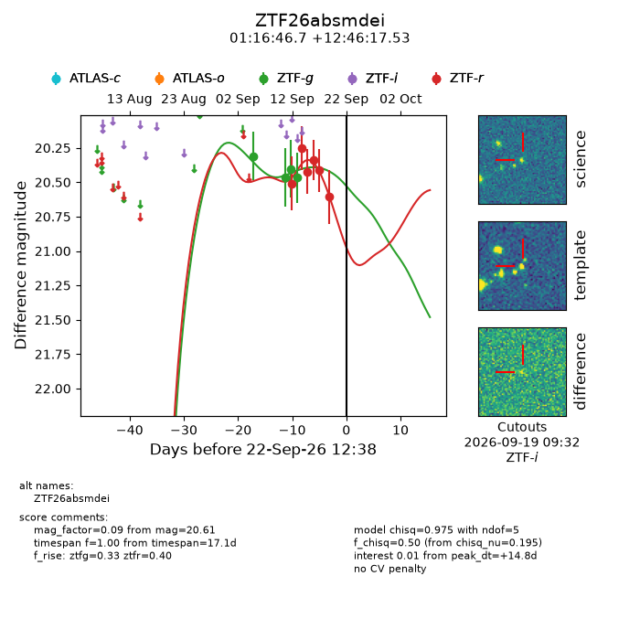
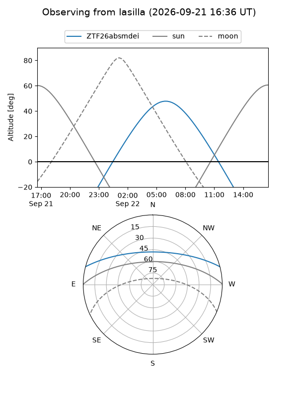
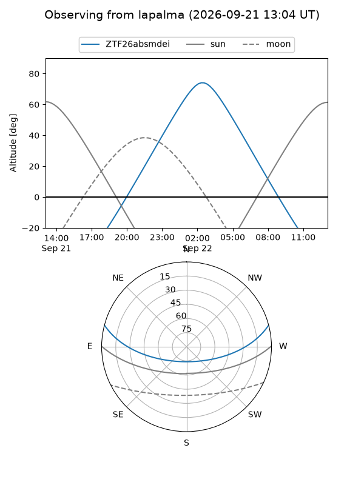
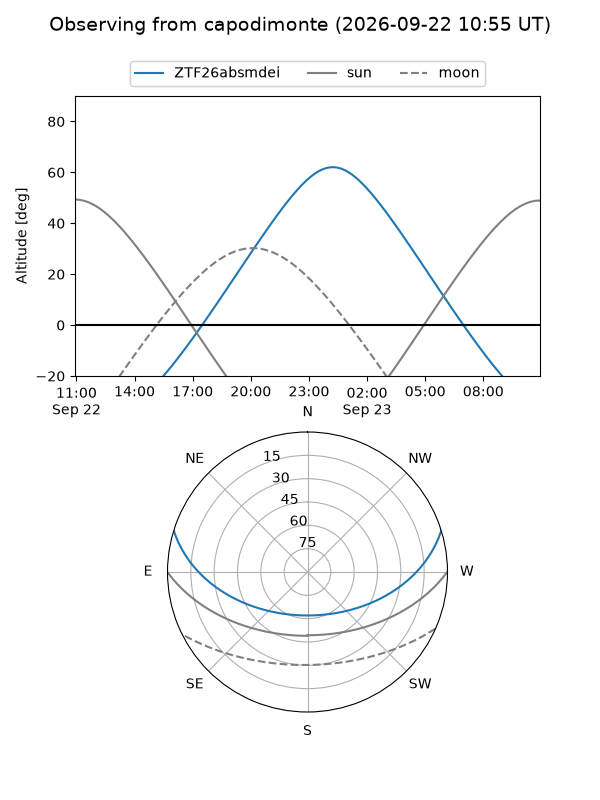
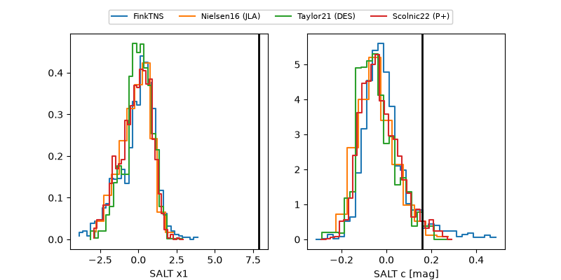

ZTF26absmdei
Target ZTF26absmdei at 2026-09-22 12:40
Aliases and brokers:
FINK-ZTF: ztf.fink-portal.org/ZTF26absmdei
Lasair-ZTF: lasair-ztf.lsst.ac.uk/objects/ZTF26absmdei
ALeRCE-ZTF: alerce.online/object/ZTF26absmdei
Direct TNS query: direct search
alt names
ZTF26absmdei (ztf,fink_ztf)
Coordinates:
equatorial (ra, dec) = 19.1946,+12.77153
equatorial (HMS+DMS) = 01:16:46.69,+12:46:17.53
galactic (l, b) = (132.4953,-49.62910)
Flags:
peak dt: +14.8
Photometry:
last ztfg=20.47, ztfr=20.61
4 ztfg, 6 ztfr detections
Lightcurve

Visibility



Additional plots
